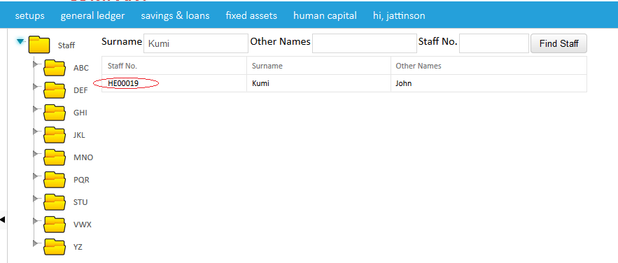

Manage staff is usually accessed when data of already existing staff is to be edited.After selecting manage staff ,provide the surname of the particular staff' you want to edit and select find staff after which you click on the staff number to retrieve his or her info to edit as shown in the images below,


Created with the Personal Edition of HelpNDoc: Free HTML Help documentation generator